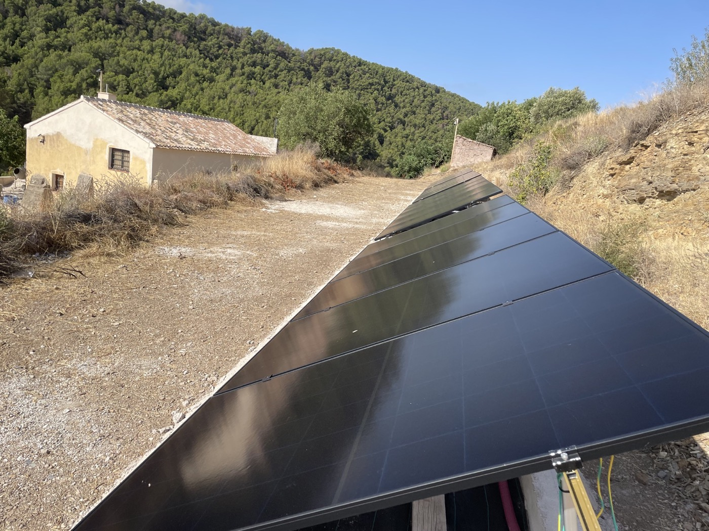

Autoconsumo
Trabajos reales
Proyectos que muestran el resultado y el detalle técnico
Una selección de instalaciones de autoconsumo, sistemas aislados con almacenamiento, renovaciones y ventilación con recuperación de calor. Cada imagen corresponde a trabajos reales de Resolution Solar Energy.

Autoconsumo
Cubierta plana urbana
Autoconsumo residencial con módulos de acabado negro.Autoconsumo
Inversor y protecciones
Integración interior limpia y accesible para mantenimiento.Sistema aislado
Generación solar en finca rural
Producción fotovoltaica para un emplazamiento aislado.Sistema aislado
Almacenamiento de gran capacidad
Conversión, regulación y baterías coordinadas en una sola instalación.Sistema aislado
Control y regulación Victron
Equipos organizados para facilitar operación y mantenimiento.HVAC
Recuperador de calor para vivienda
Unidad central, conductos aislados y salidas exteriores coordinadas.Antes y después
Renovación integral de sistema aislado
Más orden, protección, capacidad de almacenamiento y facilidad de mantenimiento.Más soluciones técnicas
La misma visión integral, también en otros servicios
Además de los proyectos mostrados, estudiamos y ejecutamos actuaciones que complementan la instalación energética del inmueble.
Ver todos los serviciosDrones y termografía
Inspección de cubiertas, paneles y zonas de difícil acceso para detectar anomalías y planificar actuaciones.
HVAC y recuperación de calor
Ventilación, calefacción y climatización orientadas al confort, la eficiencia y la calidad del aire interior.
Recarga de vehículo eléctrico
Puntos de recarga seguros para vivienda, comunidad, empresa o aparcamiento.
Electricidad, SAT y mantenimiento
Protecciones, adecuaciones, diagnóstico y seguimiento para conservar el rendimiento de la instalación.
¿Tienes un proyecto parecido?
Envíanos tu caso y lo revisamos contigo
Una foto de la cubierta, sala técnica o cuadro eléctrico puede ser suficiente para empezar a orientar el proyecto.
Pedir presupuesto